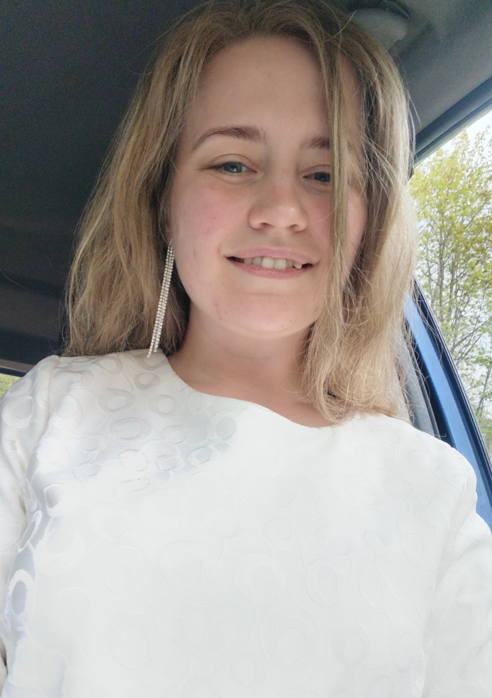

Меня зовут Дарья Пилипенко

Я учу детей 6-11 лет в мини-группах.
Как проходят занятия?
- Разбираем школьную программу в темпе, который комфортен каждому ребёнку, — без спешки и страха ошибиться.
- Не давлю и не критикую за ошибки: вместе находим, где сбились, и ищем верный путь решения. Ошибка у нас — часть работы, а не повод для огорчения.
- Часто меняем виды деятельности — от этого не устаёт и не скучает даже тот, кто предмет не очень любит.
- Благодаря мини-группе каждый ребёнок успевает высказаться и быть услышанным — именно тогда, когда ему хочется что-то сказать.
Опыт
Преподаю больше восьми лет, окончила Томский государственный педагогический университет.
За это время выпустила 3 класса: более 50 детей окончили начальную школу и перешли в среднее звено с оценками «4» и «5».
Почему я преподаю
Мне искренне нравится это делать. Самая большая радость — когда ребёнок не отмахивается от темы, а вдруг понимает её по-настоящему: загорается и сам начинает объяснять. Такие моменты для меня дороже любых оценок.
Записаться на пробное занятие
Или напишите напрямую: daryaPily@yandex.ru